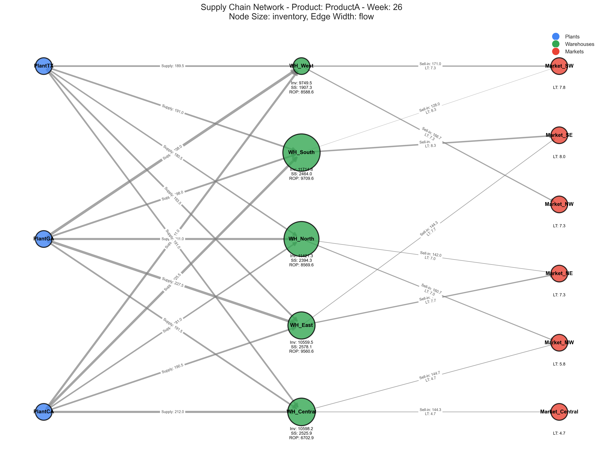
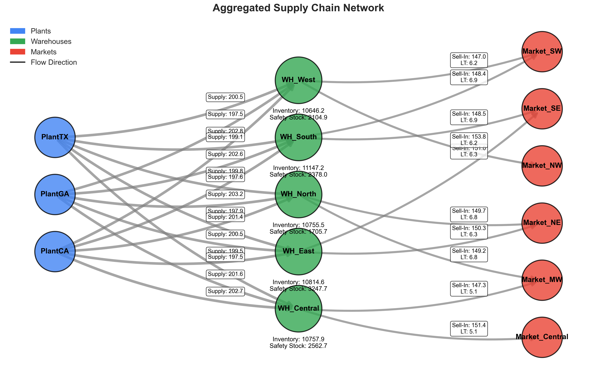
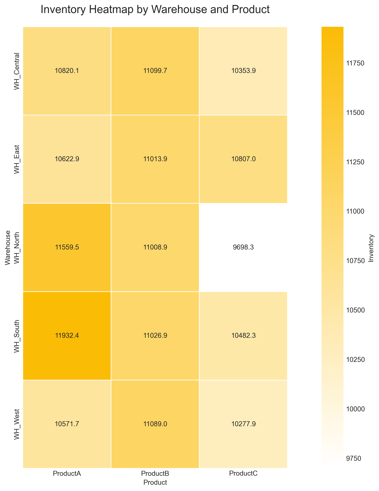

| Warehouse | Supply Before | Supply After | Change (%) |
|---|---|---|---|
| WH_Central | 200.59 | 210.62 | 5.0% |
| WH_East | 200.49 | 210.51 | 5.0% |
| WH_North | 199.55 | 209.53 | 5.0% |
| WH_South | 200.52 | 210.54 | 5.0% |
| WH_West | 200.24 | 210.25 | 5.0% |

This report summarizes the results of a supply chain simulation and optimization exercise.
The simulation included:
| Warehouse | Supply Before | Supply After | Change (%) |
|---|---|---|---|
| WH_Central | 200.59 | 210.62 | 5.0% |
| WH_East | 200.49 | 210.51 | 5.0% |
| WH_North | 199.55 | 209.53 | 5.0% |
| WH_South | 200.52 | 210.54 | 5.0% |
| WH_West | 200.24 | 210.25 | 5.0% |
| Warehouse | Inventory Before | Inventory After | Change (%) |
|---|---|---|---|
| WH_Central | 0.00 | 9144.22 | 914421736.11% |
| WH_East | 0.00 | 9192.39 | 919239310.9% |
| WH_North | 0.00 | 9142.20 | 914220405.98% |
| WH_South | 0.00 | 9475.10 | 947509620.73% |
| WH_West | 0.00 | 9049.26 | 904925710.47% |
The following visualization shows the overall supply chain network:
This enhanced visualization shows inventory levels and safety stock across the network:
This heatmap shows inventory distribution across warehouses and products:
Detailed data can be found in the exported CSV files.
Report generated on: 2025-03-05 19:43:10